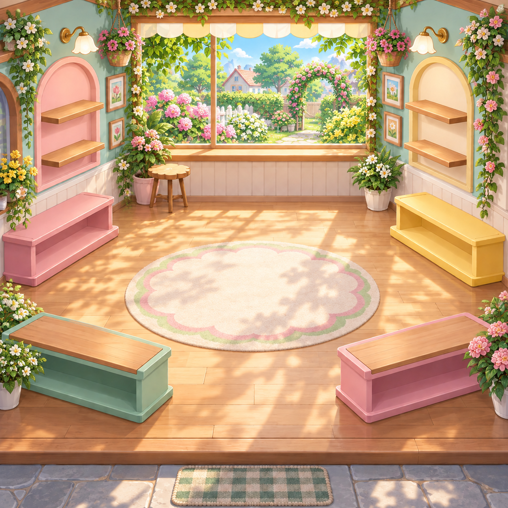
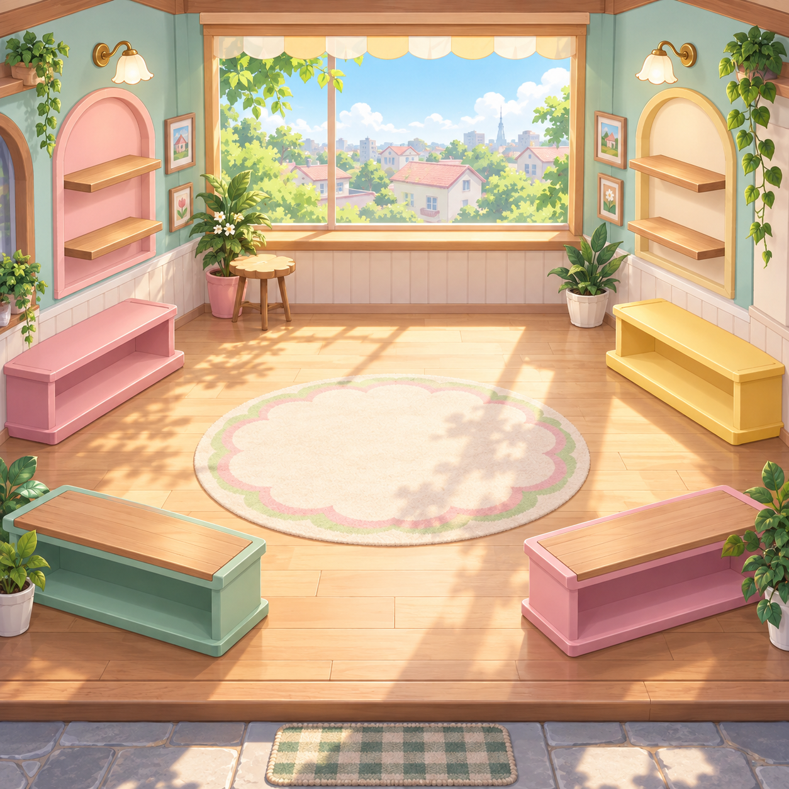
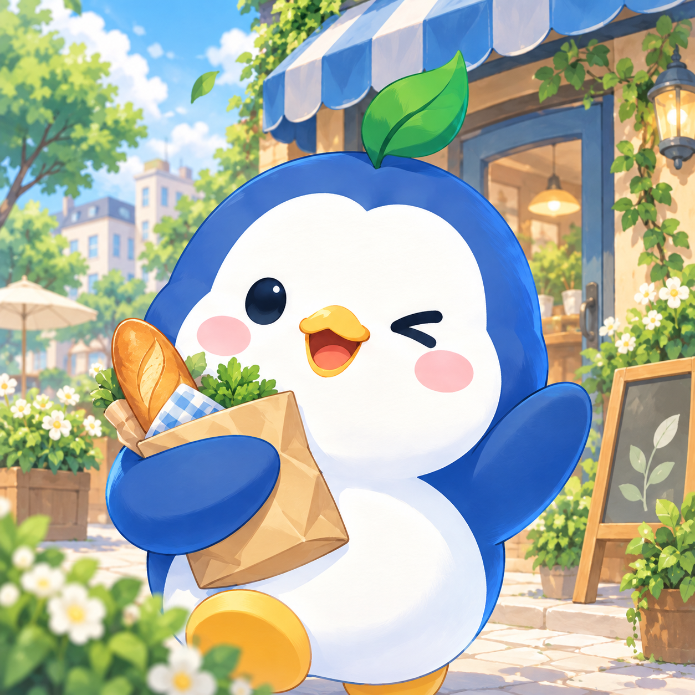
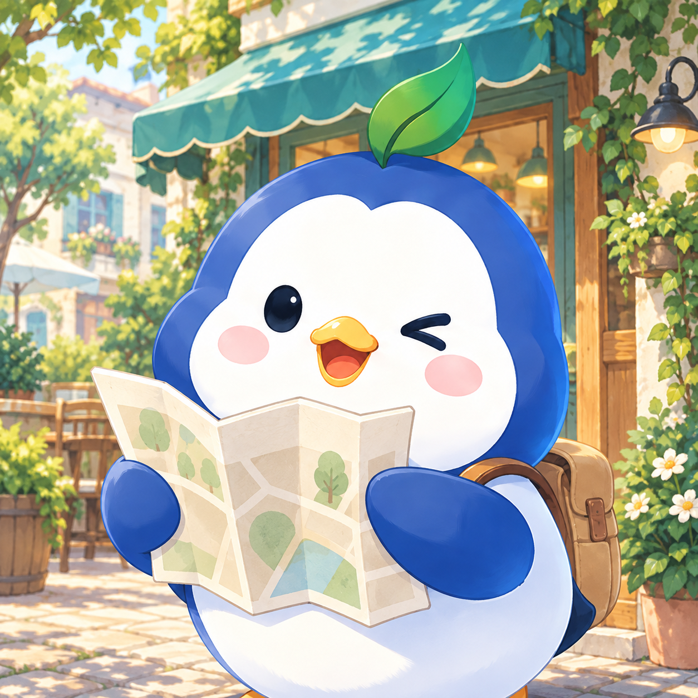

동네 탐험과 수집 · 새 경험 미리보기
MassCOM
새 가게를 발견하고,
특별한 수집품을 만나고,
내 동행과 함께 놀아요.

방문은 수집으로, 놀이는 나만의 공간으로
동네 탐험과 수집 · 새 경험 미리보기
가게에서 만난 친구를
나의 공간으로 데려와요.



가게 발견 · 방문 수집 · 동행 꾸미기 · 네 가지 놀이
동네 탐험과 수집 · 새 경험 미리보기
새 가게를 발견하고,
특별한 수집품을 만나고,
내 동행과 함께 놀아요.

방문은 수집으로, 놀이는 나만의 공간으로